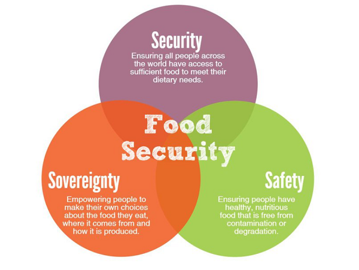
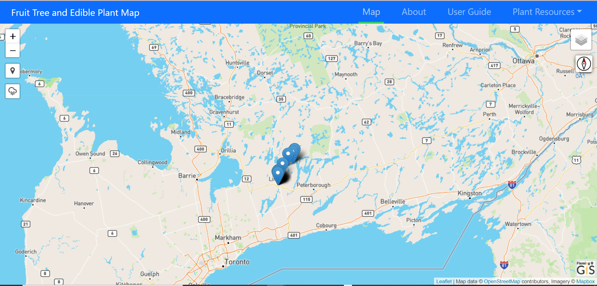

Kawartha Lakes and Haliburton Fruit Tree and Edible Plant Map
Welcome to the Kawartha Lakes and Haliburton County Fruit Tree and Edible Plant Map.
Kawartha Lakes and Haliburton County are on the territory
of the Michi Saagiig Anishnaabe who have cared for these lands and waters since time immemorial and are covered by the Williams Treaties. This website enables all of us in the community to identify fruit bearing trees and bushes on publicly owned land such as roadsides and parks and then add them to this map so we all have access to them.
On this website you will find instructions on how to locate what is currently on the map and get help to identify and add the new trees and bushes you find.
You will learn that you can easily add these to the map from your phone or computer, add a photograph if you like and find links to recipes and harvesting information.
Be gentle with the trees and bushes when you harvest the food. Always leave some for wildlife. If you find that you have more than you can use, kindly contact your local food bank to see if they can accept your extra harvest.
Thank you for adding public fruit trees and edible plants to the map.
If you have any questions please contact Rachel Gillooly (she/her)
Ending Poverty Roundtable Coordinator, CKL / Haliburton County
Partners for this project include Haliburton County/City of Kawartha Lakes Roundtable for Ending Poverty, the Kawartha Lakes Food Coalition
Food Security Working Group and Fleming College Urban Forestry and GIS departments.

Purpose
A population-based survey from the Haliburton, Kawartha, Pine Ridge District
Health Unit estimated that household food insecurity in the City of Kawartha
Lakes and Haliburton in 2019 was 14.4%. The provincial food insecurity
average sits at 13.3%. The level of food insecurity in this region is
one of the largest in the province.

Solution
A multipronged approach is required to address food insecurity.
A resource with information on publicly accessible fruit-bearing
trees through a web map can be one of the approaches to help increase
access to fresh local food. Populated by the public, used by the public!
The goal of the website is to help the City of Kawartha Lakes and Haliburton
communities with information and locations of locally grown, publicly
accessible edible plants in the region.
This website will provide a map to display locations of locally grown
and publicly accessible fruit-bearing trees/bushes, a form for the public to use
to submit new tree locations and information, links for the public to learn how
to utilize the fruit, and guides to help the public identify trees/bushes properly.
The partners would like to thank the following Fleming College GIS students for developing this website.
Korey Hayes
Korey Hayes - Fleming College Forestry Technician and GIS Applications Specialist graduate.
Navjot Kaur Sodhi
Navjot Kaur Sodhi - Punjabi University Masters of Astronomy and Space Physics program and Fleming College GIS Cartographics Specialist graduate.
Riley Sweeney
Riley Sweeney - Fleming College Forestry Technician and GIS Applications Specialist graduate.